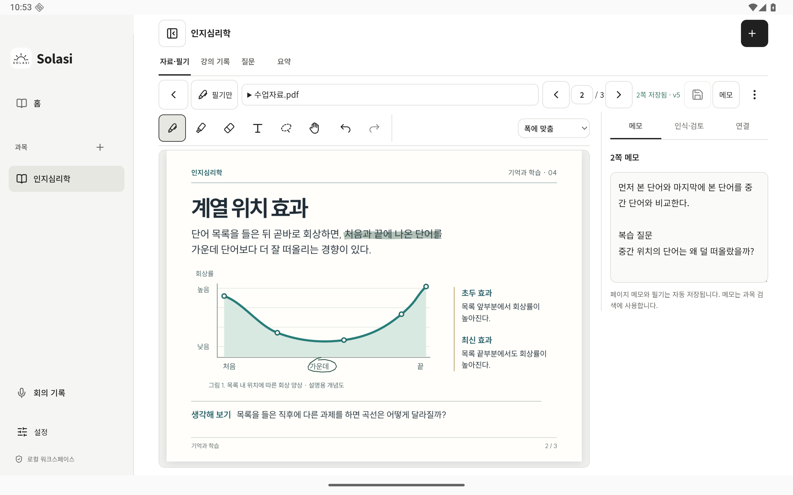
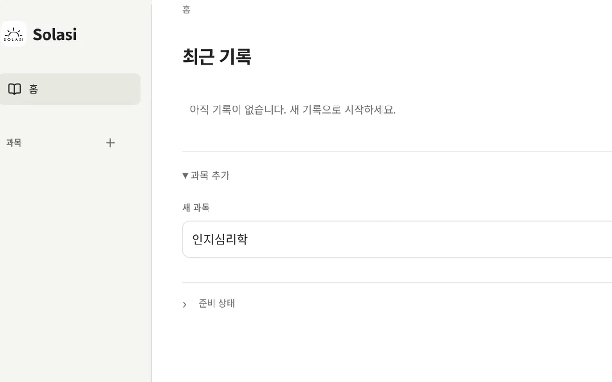
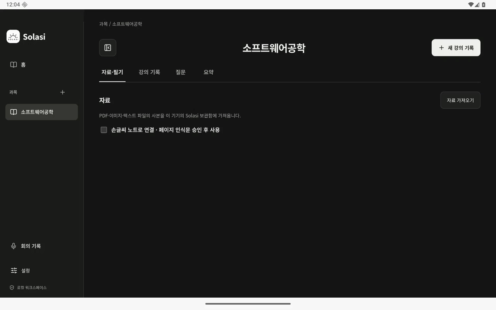
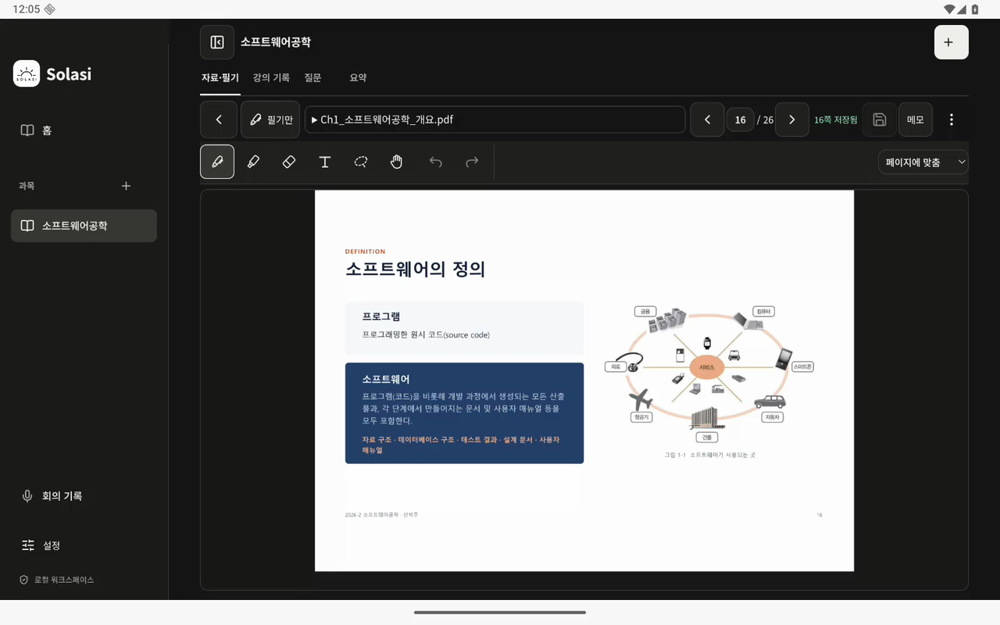
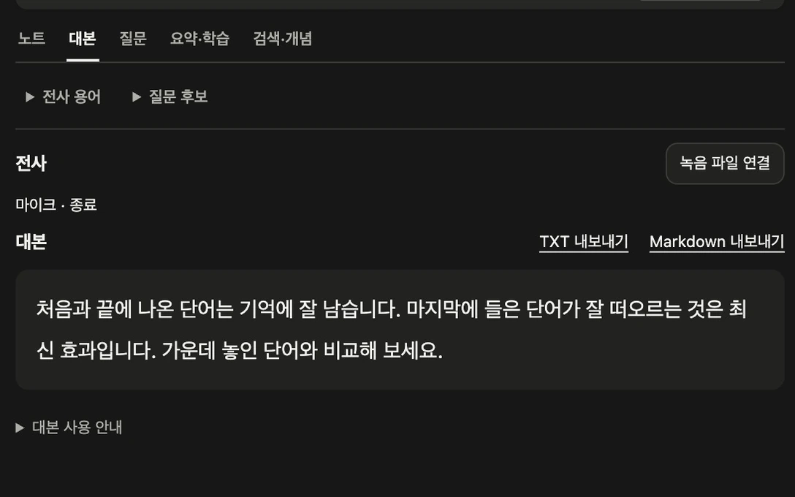
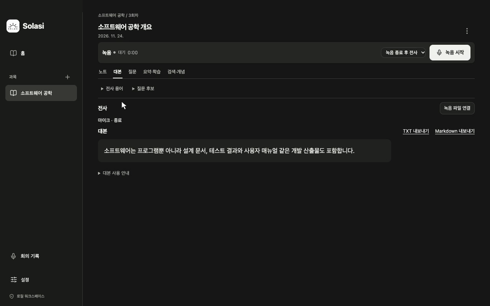

Android 태블릿
Android 9 이상, ARM64 v3 개발 프리뷰
Android APK 다운로드Android 설치 방법
- 태블릿에서 APK를 다운로드하고 파일을 엽니다.
- Android가 요청하면 해당 설치 출처를 허용하고 설치를 확인합니다.
- Solasi가 새 APK를 받으면 설정 → Android 업데이트 → 업데이트 설치에서 적용합니다.

Android 태블릿 · Mac
태블릿에서 강의 자료에 필기하고,
Mac에서 대본의 한 문장을 골라 다시 들으세요.
복습할 때
밑줄 친 자료는 찾았는데, 그 옆에 적은 설명은 다른 노트에 있습니다.
다시 듣고 싶은 설명은 짧아도, 녹음 파일에서 그 순간을 찾는 데는 시간이 걸립니다.
주요 기능
과목에 강의 PDF를 연결하면 다음 수업에서도 같은 자료와 필기를 펼칠 수 있습니다.
펜으로 설명을 덧붙이고 형광펜으로 중요한 줄을 표시합니다. 페이지마다 짧은 메모도 남길 수 있습니다.
수업을 녹음해 회차별로 보관합니다. Mac에서는 녹음을 마친 뒤 대본으로 옮길 수 있습니다.
Mac에서 대본의 문장을 고른 뒤 ‘선택 구간 듣기’를 누르면 그 부분의 원음이 재생됩니다.
Mac에서 대본은 텍스트나 Markdown으로, 페이지 메모와 필기는 JSON 파일로 저장합니다.
다시 볼 용어와 문장이 원래 PDF 위에 그대로 남습니다.
그때 떠오른 질문을 적어 둔 페이지에서 읽습니다.
강의를 들으며 대본의 표현을 확인하고 바로잡습니다.
같은 과목의 자료를 펼쳐 회차별 녹음과 함께 봅니다.
이번 학기에 들을 과목을 만듭니다.

과목에서 강의 PDF를 열고 오늘 볼 페이지를 펼칩니다.

PDF의 중요한 문장에 형광펜을 긋고, 펜으로 표시합니다.

Mac에서 강의 녹음을 대본으로 옮깁니다.

대본에서 문장을 골라 그 구간의 원음을 다시 듣습니다.

과목에서 강의 PDF를 열면 필기 도구와 페이지 메모를 함께 볼 수 있습니다.
‘필기만’을 눌러 PDF를 넓게 펼치고, 펜과 형광펜으로 중요한 대목에 표시합니다.
Mac에서 강의 기록을 열어 그날 녹음한 원음을 다시 듣습니다.
‘대본’ 탭에서 문장을 고르고 ‘선택 구간 듣기’를 누릅니다. 원음을 들으며 잘못 옮겨진 단어를 고칠 수 있습니다.